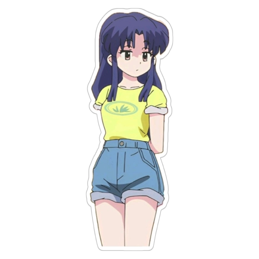
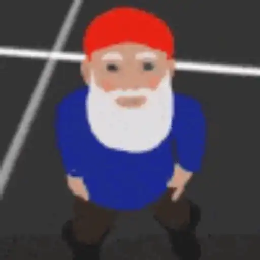
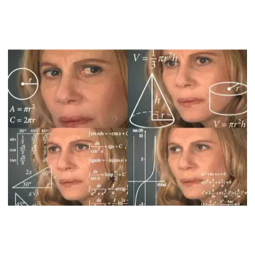

tu e Akane scappate a casa grazie a Gerry Scotty che gentilmente vi offre il passaggio
appena entri in casa ti viene la pisciarola e chiedi ad Akane dov'è il bagno, ti risponde che è al secondo piano
stai per sederti ma per fortuna ti accorgi che c'è qualcuno dentro al vater

per fortuna ti sei accorto ma dove andrai a farla adesso??
